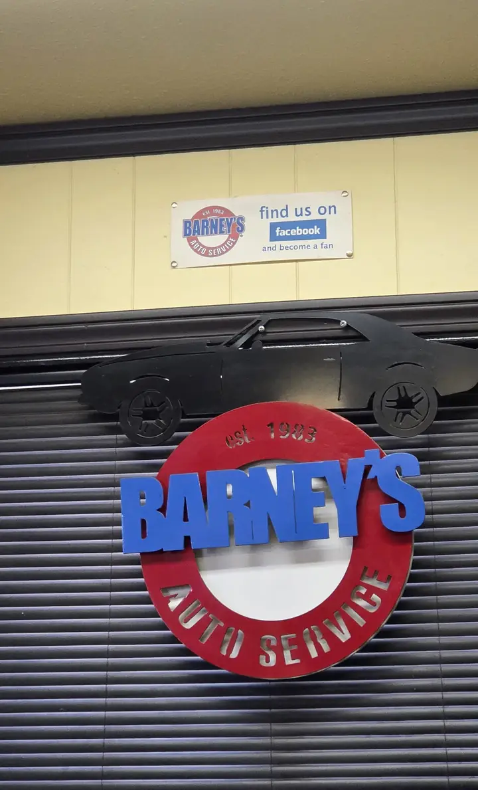
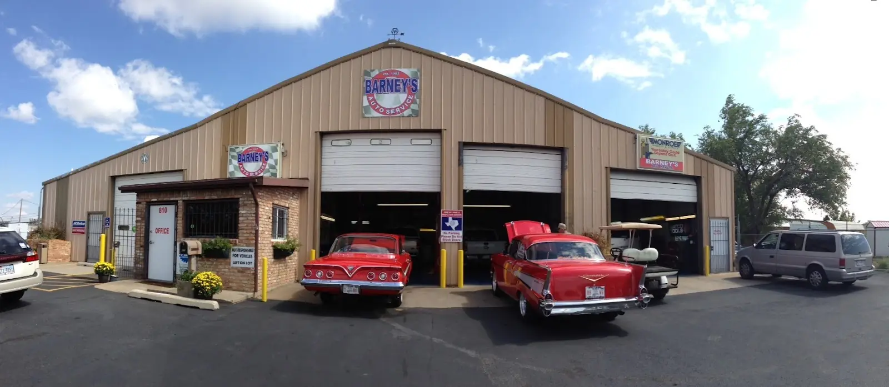

Service1
From the shop’s Google post
Brake service
The shop's own Google post says it plainly: “Brakes shouldn't be heard.” If yours squeal or grind, bring the car in and get them looked at.
Call for pricingCall
Auto repair at 810 N Western St in Amarillo. Brakes, A/C, diagnostics and more, from a shop whose customers rate it 4.6 on Google.
4.6229 Google reviews
That is what the sign inside the shop says, and the shop’s own Google post calls Barney’s family owned and operated since 1983, proudly serving Amarillo and the surrounding areas.
Customers write about a friendly front office, quick turnaround and honest work. Their own words are further down this page.


Based on the Google listing, the shop’s own post and what customers mention. Prices are not published online, so call the shop.
The shop's own Google post says it plainly: “Brakes shouldn't be heard.” If yours squeal or grind, bring the car in and get them looked at.
A traveling customer wrote that the shop fitted them in and finished a full A/C repair in under 24 hours during a heatwave.
Customers mention oil leak diagnosis and getting the right repair done. Describe the noise, smell or leak when you call.
Trucks come up in customer reviews alongside cars. Call to confirm your truck and what it needs.
Fleet maintenance is mentioned by customers. Running several vehicles? Call and ask what the shop can take on.
Inspections are among the topics customers mention. Ask on the phone what applies to your vehicle.
One customer had a lug nut break off and was fitted in right away to get it out.
Google lists Barney’s Auto Service as an auto repair shop. If your problem is not on this list, call and describe it.
Describe the noise, smell, light or leak when you call. The shop can tell you what to do next.

5/5 Stars (If I could give a million, I would!) We are traveling from out of state, 2,200 miles away from home, in the middle of this brutal heatwave sweeping across New Mexico and Texas. Driving in triple-digit heat without air conditioning was absolute misery, but Barney's Garage saved the day! They didn’t just squeeze us in immediately to diagnose the issue—they completed a full AC repair in under 24 hours. The ladies in the office even handed out popsicles to keep us cool while we waited! Outstanding service, honest work, and absolute lifesavers for road trippers. We can't thank you enough.
These guys are great. Front office staff is a pleasure to deal with. The shop helped arrange pick up of a disabled vehicle and fixed it up in a timely manner so the kid could get off to college. Military friendly, quality work, and great prices!
Had a lug nut break off at the tire shop had to bring it in, Paul got it out quick for me. Thank yall so much for getting me in right then. Anytime I’ve had to come up here I’ve always received wonderful service keep it up guys.
Selection of verbatim Google reviews, rating as shown on Google November 2026. View the Google profile.
| Monday | 8 AM – 5:30 PM |
| Tuesday | 8 AM – 5:30 PM |
| Wednesday | 8 AM – 5:30 PM |
| Thursday | 8 AM – 5:30 PM |
| Friday | 8 AM – 5:30 PM |
| Saturday | Closed |
| Sunday | Closed |
Hours as listed on Google. Call to confirm on holidays.
Call first and describe your vehicle: (806) 373-9746
Monday to Friday, 8 AM to 5:30 PM. Closed Saturday and Sunday, as listed on Google. Hours can change around holidays, so call to confirm.
Prices are not published online. Call (806) 373-9746, describe what the vehicle is doing and the shop can tell you what to do next.
Walk-in and appointment policies are not listed, so the safest move is to call first at (806) 373-9746.
Customers mention truck repair and fleet maintenance in their Google reviews. Call and confirm your vehicle before you come.
810 N Western St, Amarillo, TX 79106.
Call the shop and describe it. The phone is the fastest way to get answered.